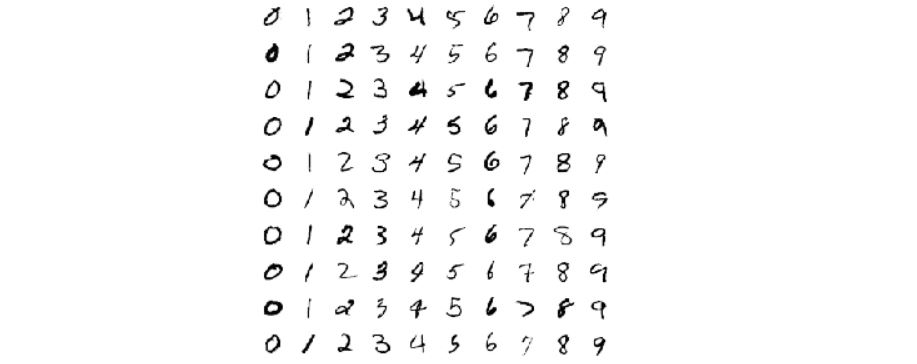
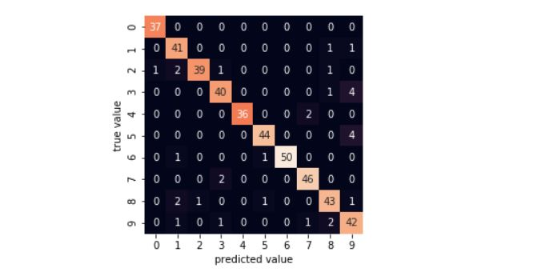

Digit classification using artml library
Handwritten Digit classification is one of the standard mutliclass classification tasks in Machine learning. Although this is not a core application for using real time learning, To understand the usage of library and the power of linear models for complicated classification tasks, we opted this for demonstrating the artml API.

In this demo project, you will know:
- Sample Preprocessing techniques
- Building Basic Element table
- Real Time Univariate Data Exploration
- Building Real time Multiclass classification Models
- Updating the BET and Models with the new dataset
Let’s get started. For python code, check the link.
First step, Load the digits dataset (8*8) from the sklearn datasets.
from sklearn.datasets import load_digits
digits = load_digits()
digits.images.shape
Preprocess the data for one hot encoding the target feature and dividing the data into testing & training sets.
from sklearn.model_selection import train_test_split
Xtrain, Xtest, ytrain, ytest = train_test_split(X, y, random_state=0)
y1 = pd.DataFrame(ytrain)
y2 = pd.get_dummies(y1[0])
y2.columns = [str('Target_') +str(x) for x in range(0,10)]
Since, we use QDA and SVC for classification, we need to make sure that the train data is not a singular matrix. Hence avoid null features from the dataset. [In the data exploration tasks observe these features and remove them while building the models]
Then import artml library by following the installation guidelines and build the Basic Element table.
from artml import bet
BET1 = bet.create_bet(train_data1)
In the above case for explanation purpose, we divided the training data into two sets. First we will build models using only some part of the data. Later, we update the models just by using the new data.
from artml.explore import stats
stats.univariate(BET1)
Then use the above BET table for building different classification models as shown below.
from artml.models import naive_bayes
gnb = naive_bayes.GaussianNB()
gnb.fit(BET1, 'Target_0', 'Target_1','Target_2', 'Target_3', 'Target_4', 'Target_5', 'Target_6', 'Target_7','Target_8', 'Target_9')
gnb.score(Xtest.as_matrix(), ytest)
for the GaussianNB model, we got the accuracy of 84.88% But, lets try and check the other models.
from artml.models import QDA
qda = QDA.QuadraticDiscriminantAnalysis()
qda.fit(BET1, 'Target_0', 'Target_1','Target_2', 'Target_3', 'Target_4', 'Target_5', 'Target_6', 'Target_7','Target_8', 'Target_9')
qda.score(Xtest, ytest)
Eventhough QDA & SVC are powerful linear classification models we got a very low accuracy_score while testing these models. This might be because of the small amount of the training data. As, Naive bayes also works at small training datasets we got good accuracies in that case.
from artml.models import svm
svc = svm.LinearSVC()
svc.fit(BET2, 'Target_0', 'Target_1','Target_2', 'Target_3', 'Target_4', 'Target_5', 'Target_6', 'Target_7','Target_8', 'Target_9', c=0.00001)
svc.score(Xtest, ytest)
Now lets try improving the model accuracy by using more training data instead of building complex models. for updating the model in real time first update the BET with new data using the learn function.
BET2 = bet.learn(BET1, train_data2)
Again, run the same above models using the new BET (New BET captures the total lager amount of training data in it!)
After running the same above models we can observe that Naive_Bayes model accuracy slightly decreased - 82%. But QDA and SVC model accuracies largely improved to 93% & 45%. Below is the confusion matrix for the QDA predictions.

Hence we can clearly see that QDA is a powerful linear model even for multiclass classification given enough amount of data. So, we can use these kind of models in real scenarios where we get continous data and where models need to be updated in real time for generating real time insights.
Use this simple yet powerful API for building the realtime models. If you have an application of artml that is concise and powerful, please consider adding it to our collection of examples.
Happy Learning!